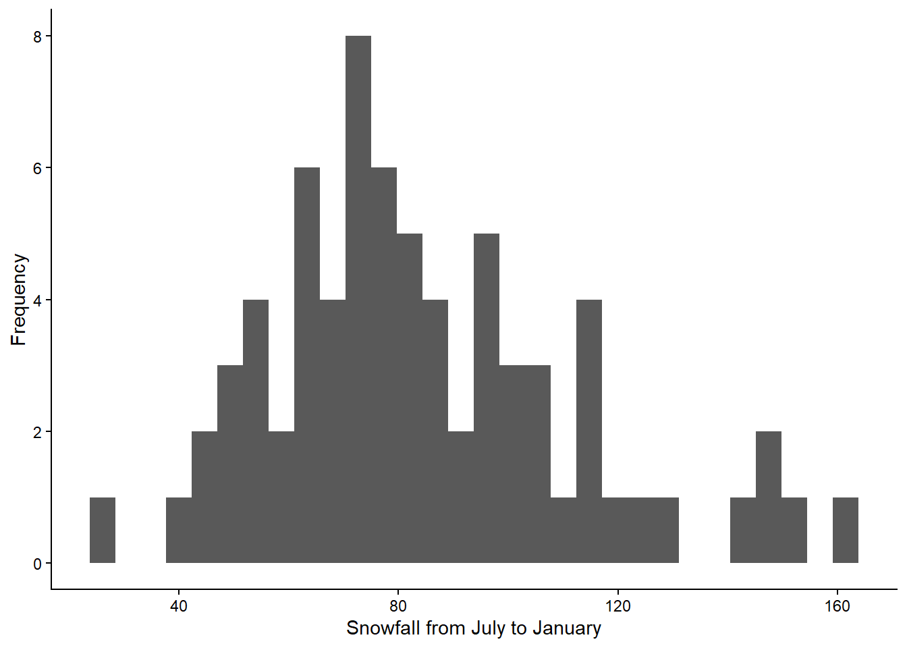
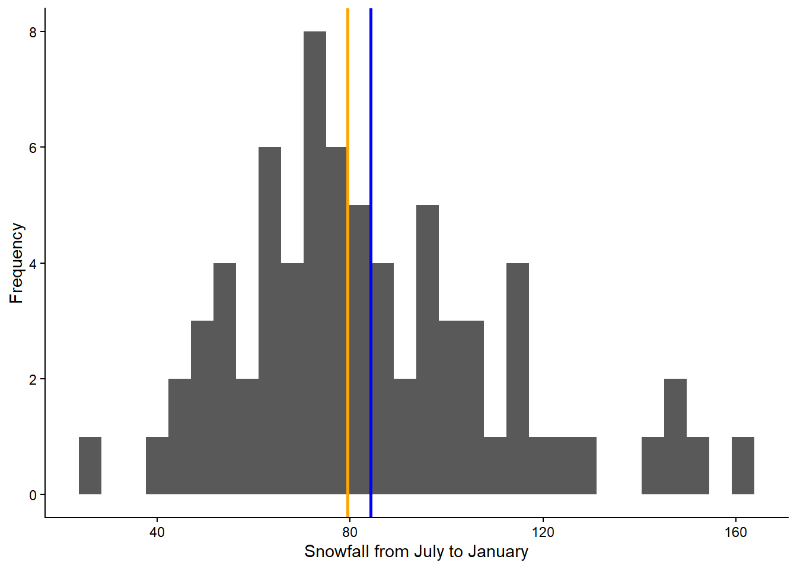
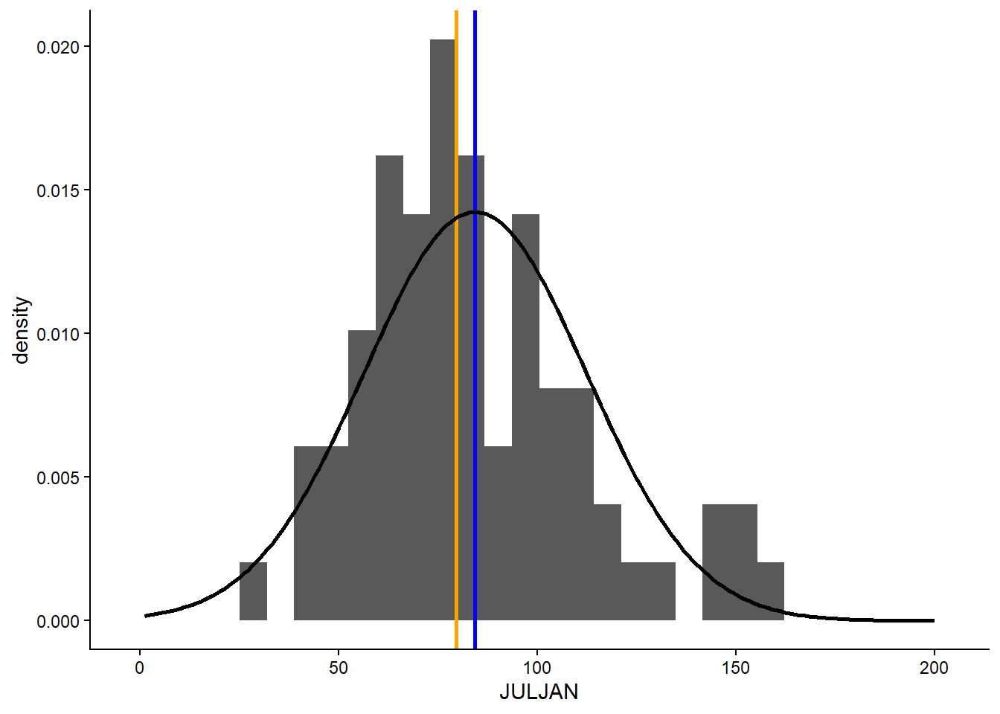

ESS 3500 R Handbook, Lesson 9
Emily Schultz
2023-02-15
Lesson 9: DISTRIBUTIONS AND DESCRIPTIVE STATISTICS
In this lesson, we will cover how to graph distributions in R and how to calculate descriptive statistics to describe those distributions. The good news is, you have already learned some of the descriptive statistics functions, so they will be a review. You will also get to make your first graphs using the ggplot2 package!
We will work with the BKSnow.csv file, which has monthly snowfall data for Breckenridge, dating back to the late 1940s. Download the data file and upload that file into R now (be sure to set your working directory first, and save your code in a script file):
snow <- read.csv("BKSnow.csv")9.1 Graphing distributions
In this section, we will make our first foray into graphing! We will use the ggplot2 package for making graphs because it is easier to make nice looking graphs in ggplot than in base R.
Load the tidyverse package for this session:
library(ggplot2)In this section, you will learn to make histograms. Making this type of graph is often one of the first steps in exploratory data analysis, which gives us a feel for what our data look like before we start formal analysis.
Histograms are useful for visualizing how our data are distributed. Are they close to a normal (bell-shaped) distribution? Are they skewed? Biomodal? Are there outliers? All of these questions can be answered with a histogram.
We will start by making a histogram of our “JULJAN” variable, which is the total snowfall from July to January. When you use the ggplot2 package to make graphs, you will start with one line of code that tells ggplot what data to use for your graph. Then you add additional lines of code to create and modify your graph. Here is the code to make a simple histogram, without changing any default settings:
ggplot(data = snow, aes(x = JULJAN)) +
geom_histogram() 
In the first line of code above, we start with the
ggplot function. The first argument of the function (data)
is the data frame that contains the data you want to graph (it needs to
be a data frame object). We want to use our snow dataframe.
Next is the aesthetics argument (aes), where you list the variables you
want to graph. Notice that “aes” is followed by parentheses. This is
because you can list multiple variable for this argument, so you put the
list of variable inside the parentheses. For our histogram, we are only
using one variable (JULJAN), and this is our x variable. We end the line
with a + sign to indicate that we are adding additional code on the next
line to create the graph. In the second line of code, we are telling
ggplot that we want to use the data from the first line of code to
create a histogram. We don’t need to add any arguments to the
geom_histogram because we already told ggplot what data to
use, and we aren’t changing any default settings.
Now let’s take a look at a few ways we can modify our graph to make
it look nicer. First, let’s change our axis labels. “JULJAN” is sensible
for a column heading because it’s brief and it doesn’t have any spaces,
but it looks a little odd on a graph, and it’s not descriptive enough
for an axis label. I also like to start my axis titles with a capital
letter. We will add another line to the code with the labs
function to change the axis labels. Don’t forget to add a plus sign to
the end of the geom_histogram line to indicate that you are adding more
code for the graph below.
ggplot(data = snow, aes(x = JULJAN)) +
geom_histogram() +
labs(x = "Snowfall from July to January", y = "Frequency")
I also find the grey background to be distracting, so we will change the theme to get rid of the background. Again, we will add another line of code, so add the plus sign to the end of the labs line.
ggplot(data = snow, aes(x = JULJAN)) +
geom_histogram() +
labs(x = "Snowfall from July to January", y = "Frequency") +
theme_classic()
Now we have a histogram that both shows us the distribution of our data and looks pretty nice!
9.2 Descriptive statistics
Central tendency
In class, we discussed three measures of central tendency: mean, median, and mode. Below, we will cover how to calculate each for the “JULJAN” variable in the data frame.
You have used the mean function before, but this time we
will calculate the mean of a column in data frame instead of the mean of
a vector. Notice the use of the optional na.rm=T argument
to remove missing values before calculating the mean.
mean_JULJAN <- mean(snow$JULJAN,na.rm=T)
mean_JULJAN## [1] 84.30972Calculating the median is similarly intuitive:
median_JULJAN <- median(snow$JULJAN,na.rm=T)Unfortunately, there is not a built-in function for calculating the mode in R, but there are a few options for determining the mode. Likely the easiest is to install DescTools package, which does have a mode function.
install.packages("DescTools")You will only need to run the install packages command once, and then it will be installed on your computer.
To load the package and calculate the mode, run
library(DescTools)
mode_JULJAN <- Mode(snow$JULJAN)
mode_JULJAN## [1] NA
## attr(,"freq")
## [1] NAIn the output, the top number you will see is the mode. If there are
multiple modes, you will see a vector listing all of the modes instead
of a single number. The number on the bottom is the frequency of the
mode (how often that value appeared in the data set). Notice in this
case, the values are both NA. Based on the variable type
for the JULJAN variable and the definition of the mode, why do you think
this is? What type of variable might be more likely to have a mode?
The mode is the measure of central tendency we will use the least in this class, and it is often enough to infer it visually from a frequency histogram.
Next, we will add lines representing the mean and median to the histogram we made above. This will allow us to visualize where these values fall relative to the distribution of our data. We can do this by adding two lines to the codes we already wrote to create our histogram:
ggplot(data = snow, aes(x = JULJAN)) +
geom_histogram() +
geom_vline(aes(xintercept=mean_JULJAN),color="blue",linewidth=1) +
geom_vline(aes(xintercept=median_JULJAN),color="orange",linewidth=1) +
labs(x = "Snowfall from July to January", y = "Frequency") +
theme_classic()
The two lines we added are the lines using the
geom_vline function, which adds a vertical line to the
graph. The first argument for this function is the aes argument, like we
saw in the ggplot function. To add a vertical line, we need
to give R the x-intercept of that line. In this case, we want to add
lines representing the mean and median, so the intercepts of the lines
will be the mean and median of the “JULJAN” variable that we calculated
above. After the aes argument, I also add to optional arguments: color
and linewidth. The color argument allows you to change the line color.
You can use either the name of the color or the hex code. The linewidth
function allows you to change the thickness of the line. Here, by
setting the linewidth to 1, we are making the lines thicker than the
default, so they are easier to see.
Based on the mean and median, would you say the data are normally distributed or skewed (i.e., log normal)?
Let’s see how this affects our interpretation of current snowfall and how it compares to what is “normal”. We will pull out the July to January snowfall from this year and see how it compares to the mean and median.
First, we will extract and save this year’s snowfall. This will come
from the “JULJAN” variable in our snow data frame, so we can extract
that column using the $ symbol. Then we will want to take only the last
value from that column. We can do that using [] to index the column. We
could count the number of rows in the data frame and use that number to
extract the last value, but there is a shortcut. The nrow
function will count the number of rows in a data frame for use, so we
can just use that function inside the brackets to calculate the correct
index.
The full code for this looks like this:
snow_2024 <- snow$JULJAN[nrow(snow)]Now that we have the value, we can add it to our histogram, again
using the geom_vline function, to visually compare it to
the mean and median:
ggplot(data = snow, aes(x = JULJAN)) +
geom_histogram() +
geom_vline(aes(xintercept=mean_JULJAN),color="blue",linewidth=1) +
geom_vline(aes(xintercept=median_JULJAN),color="orange",linewidth=1) +
geom_vline(aes(xintercept=snow_2024),color="black",linewidth=1) +
labs(x = "Snowfall from July to January", y = "Frequency") +
theme_classic()Based on this new graph, is the 2023-2024 July to January snowfall lower than normal or higher than normal?
Variation
In this section, you will practice calculating measures of variability in a data set: standard deviation (which you have already learned) and variance (which is just as easy).
We’ll continue working with the “JULJAN” and “LOG_JULJAN” variables in our data frame.
Calculate the standard deviation and variance as follows:
sd_JULJAN <- sd(snow$JULJAN,na.rm=T)
sd_JULJAN## [1] 28.01594var_JULJAN <- var(snow$JULJAN,na.rm=T)
var_JULJAN## [1] 784.8927Notice the relationship between the two. The standard deviation is the square root of the variance, so we could also calculate one from the other.
9.3 Adding probability distributions
So far, we have been working with frequency distributions of our data, but we have been discussing using formal statistical distributions to represent our data. Now we will practice calculating a formal distribution (the normal distribution) and comparing it to our data.
R has a function, dnorm, that can be used to calculate
the probability density of a value for a particular outcome. We can use
this function to graph the probability density function for snowfall in
Breckenridge by using the function to calculate the probability density
for a wide range a values and graphing the output.
Based on the histogram we made, a good range of values to use is 1 to
200 because that covers the full range of snowfall values that we
observed. When we use the dnorm function, we will provide
this range as the first argument. We can create this sequence of numbers
using the : symbol. Then, to calculate the probability
density of all of these snowfall values, we have to provide the mean and
standard deviation of our distribution as the next two arguments. We
will use the mean and standard deviation we calculated for our JULJAN
variable above. We will save the probability densities values that we
calculate in a vector called “pdens”.
pdens <- dnorm(1:200,mean=mean_JULJAN,sd=sd_JULJAN)In order to graph our data using ggplot, we have to put the data in a data frame. We will create a data frame with two variables: one with the range of snowfall values and the second with the probability densities of those snowfall values.
pdens_data <- data.frame(snow=1:200,pdens=pdens)Finally, we can graph this distribution on top of our histogram, so we can compare the distribution of our data with the probability distribution.
We will do this by adding another layer to our graph, with the
geom_density function. In this function, we are using a
different data set that the one we used for the rest of our graph
(“pdens_data” instead of “snow). Because of this, inside this function,
we have to tell R the new data set we want to use (first argument) and
the values we want to graph (x and y inside the aes argument). In this
case we want to graph the probability density for each snowfall value.
Then we include another argument (stat =”identity”), which tells R that
we want to graph the probability density based on the value we provide
in our data frame, rather that calculating the density based on the
frequency of values in the data frame. Finally, the last argument again
changes the thickness of the line.
Notice I have also modified the geom_histogram function.
I added an argument (aes(y=..density..)). This change
rescales to values in the histogram so they represent a probability
density, rather than a frequency. This will put the values on the same
scale as the probability density function we calculated, so we can
effectively compare the distribution of our data to the probability
distribution.
Here’s the full code for the graph:
ggplot(snow,aes(x=JULJAN)) +
geom_histogram(aes(y=..density..))+
geom_vline(aes(xintercept=mean_JULJAN),color="blue",linewidth=1) +
geom_vline(aes(xintercept=median_JULJAN),color="orange",linewidth=1) +
geom_density(data=pdens_data,aes(x=snow,y=pdens),stat="identity",linewidth=1)+
theme_classic()
Team challenge
Throughout this exercise, we worked the the JULJAN variable, which is the total snowfall from July to January. One thing we noticed is that there is a little bit of skew in this variable. In class, I mentioned that we can sometimes force a skewed distribution to be normal by taking the log of the variable. We will try that out here and see how it changes our exploratory analysis of historical snowfall and how this year’s snowfall compares, following the steps below.
Use the
mutatefunction to calculate the log of the JULJAN variable and add it to the “snow” data frame.Calculate the mean and median of the log JULJAN variable.
Extract the value of the log JULJAN variable for 2023-2024.
Use the
dnormfunction to calculate the probability densities of a range of values for the log JULJAN variable. I would recommend a range from 2.5 to 6. Because this is a small range, you will get a better-looking curve if your sequence of values uses increments of 0.1 instead of 1. You can do this with theseqfunction as follows:seq(2.5,6,0.1). Just use this in place of the1:200in the code you practiced above.Create a data frame with the range of snowfall values and the probability densities that you calculated above.
Make a histogram showing the distribution of the log JULJAN data, the probability distribution, the mean and median of the log JULJAN data, and the 2023-2024 value of the log JULJAN data.